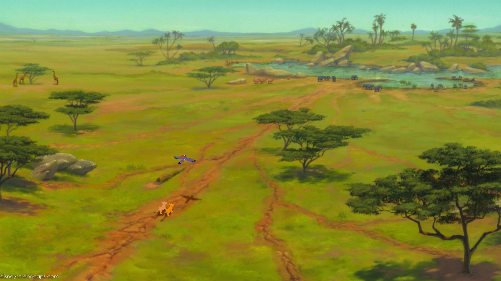

- 
Наш проект создан чтобы Вы могли понять основы анимации, так сказать с чего то начать и иметь какое то представление. Мы готовы с Вами поделиться чтобы Вы уже сегодня приступили к освоению этого нелегкого, но очень интересного дела. Этот сайт даст немного самой полезной и основной информации.
Хотелось бы сказать одну фразу, для того чтобы приступить к созданию анимации, нужно хотя бы немного уметь рисовать и пользоваться графическими редакторами.Самый на наш взгляд лёгкий в освоении графический редактор, это Anime Studio Pro, про которую мы и будем говорить.
Ниже будут последовательно представлены пункты действий с помощью которых можно будет создать мультфильм
Сценарий это основа основ в мультфильмах, кино, клипах и многом другом. Тут нужно постараться придумать что то интересное, чтобы так сказать зацепить зрителя какой либо интересной возможно жизненной идеей. Так что без хорошего сценария, не получиться хорошего мультфильма.
А чтобы научиться придумывать идеи и писать сценарии, необходимо много читать и смотреть разные мультфильмы и кино которое делают профессионалы.
Не мало важный момент это создание раскадровки, так сказать чтобы облегчить создание анимации. Раскадровка это процесс создание грубо говоря покадровой анимации чтобы иметь общее представление о каждой сцене и даже о каждом действии персонажей, фонов и возможных фраз и т.д. Так вот мы выложили немного сцен раскадровки из известного мультфильма Кунг-Фу Панда 3.
На ниже показанных картинках Вы можете увидеть как они просто и незамысловато отрисованы дабы не тратить много времени на отрисовку, а лишь сделать заготовки для дальнейшего создания полноценной анимации 2д или 3д. Раскадровку Вы можете нарисовать хоть где, обычно её рисуют на бумаге либо в каких либо графических программах, кому как удобно.
Фоны, задний план и так далее играют важную роль в создании анимации. Фоны бывают статические это означает то что они не двигаются на протяжении одной или двух сцен. Фоны бывают динамические, это значит что они двигаются меняются, допустим когда какой либо персонаж бежит или совершает какое либо действие. Обычно динамические фоны делают для более эффектного кадра, который привлекает много внимания.
Ниже мы представили несколько фонов в виде слайдов. Фоны можно создавать в графических программах, но мы бы посоветовал Вам их создавать в 3д редакторах, это и просто и экономит очень много времени. Самый простой 3д редактор это Sketchup , он бесплатный и в нём можно создавать разные 3д сцены.
Персонажи в мультфильме должны быть проработаны детально, у них должен быть стиль, образ, свой характер, манеры поведения и т.д. чтобы зритель поверил что персонаж реальный. Если Вам сложно придумать своего персонажа, то мы бы порекомендовали Вам как можно больше смотреть разную анимацию и на основе просмотренного материала,
Вам могут прийти гениальные идеи, которые Вы сможете сразу реализовать на бумаге. Далее вам понадобиться какая нибудь программа для создания мультфильмов и персонажей. Мы бы вам посоветовали Anime Studio Pro, она простая в использовании и к ней есть много обучающего материала на просторах интернета.
Анимация это то что оживляет персонажей, заставляя их двигаться, совершать какие то действия, говорить, смотреть и так далее. Дк как же нам заставить двигаться нами придуманных персонажей? Есть два способа: первый это рисовать на бумаге по кадрам действие за действием, обычно это 24 кадра в секунду, но сейчас в наше время можно создавать анимацию и 60 кадров в секунду и даже больше.
Конечно на бумаге отрисовывать каждый кадр это очень трудоёмкийю. Но мы посоветуем более простой путь в изготовлении анимации. Это создание мультфильмов в Anime Studio Pro. Изучите её и у Вас получатся потрясающие мультфильмы, кончено самое главное это упортно трудиться и постоянно соверенствовать себя и тогда результат не заставит долго ждать.
По статистики правильно озвученный мультфильм это 80% успеха! Для озвучки анимации в интернете есть очень много сайтов как с платными так и бесплатными звуками. Начиная от звука ветра и заканчивая звуками шагов, шум самолёта и т.д. Озвучку можно сделать и самому в домашних условиях можно записать различные звуки, как это делают в профессиональных студиях. Для этого вам потребуется хороший микрофон, программа для записи звука, компьютер и немного фантазии.
А чтобы непосредственно подставить под анимацию звук, для это можно использовать Anime Studio Pro, но лучше для правильной озвучки использовать профессиональную программу Adobe Premiere Pro. Про эту программу есть также очень много обучающих видео на русском языке.
Ниже мы Вам представим две анимации, со звуком и без и вы поймёте как важна хорошая озвучка и как она придаёт смысл всей анимации.
Видео со звуком
Видео без звука
И кончено заключительное действие, это монтаж всего материала, так сказать собрать всё в одной программе и подогнать всё и поставить покадрово, сцену за сценой чтобы получить мультфильм со сценарием, анимацией, озвучкой. Для решения этой задачи мы порекомендуем всё тот же Adobe Premiere Pro. Эта программ отлично подойдёт
для задачи монтажа, также туда можно добавить различные спецэффекты, которые можно создать как в аниме студии, так и в программе Adobe After Effects. Об этой программе вы можете найти много обучающего материала на просторах всемирной паутины. Так что удачи вам в ваших начинаниях.
Если у Вас возникли вопросы, предложения или пожелания, то Вы можете нам написать письмо.